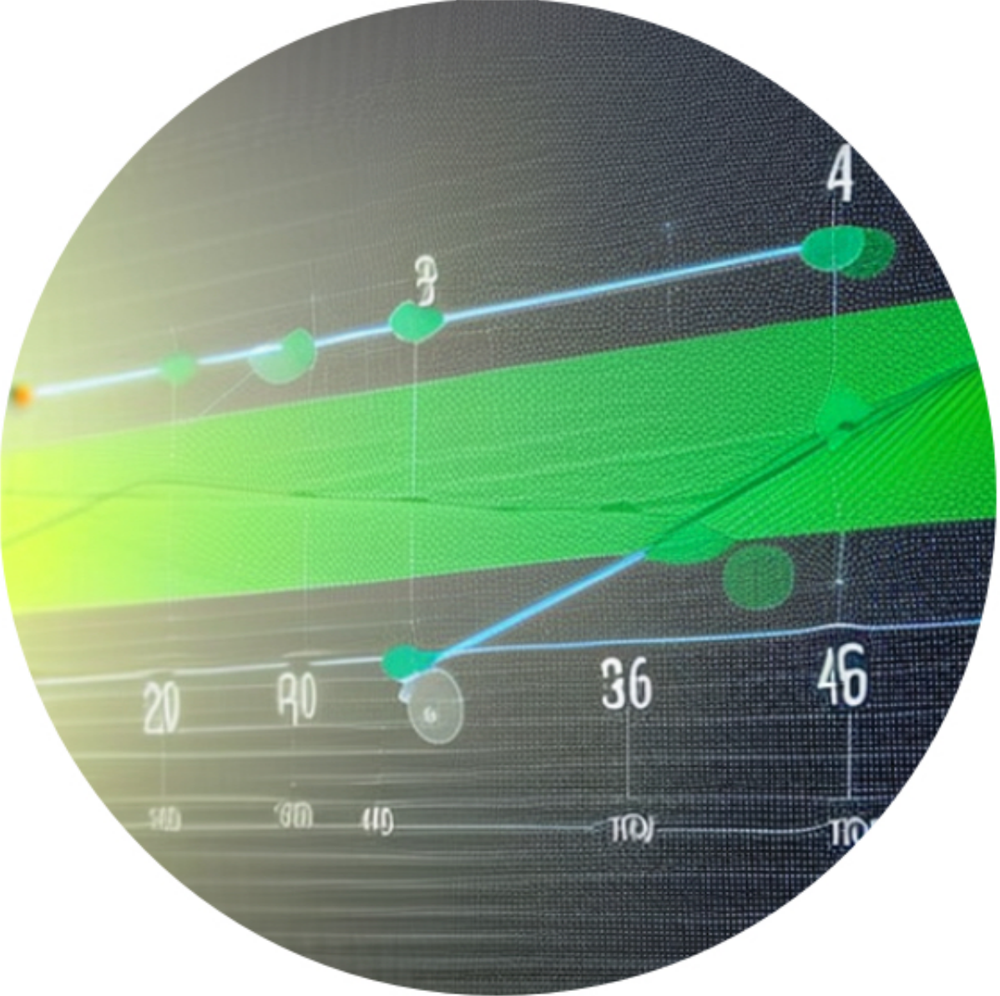

DAIKON
Open source foundational framework integrating target-based drug discovery workflows.

Deploy on-premise or on cloud and bring in your Organization's users quickly with Active Directory Connect. DAIKON is a framework developed for pharma–academic consortium-based drug discovery efforts to share ideas, technologies, compounds, assays, projects and portfolios.
Glue Molecular DBs & PMTs.
Streamline your drug discovery process by bridging gaps between molecular databases and project management tools.

Retain knowledge as compounds evolve.
Don't lose valuable insights as your compounds evolve - retain your knowledge every step of the way..
Actively developed.*
Our project is constantly evolving with new features and updates to provide the best user experience possible.
Positioned right at the early drug discovery research phase.

DAIKON is a comprehensive drug discovery management tool designed to support the drug discovery process from target identification to pre-clinical development. The tool is intended to be used by pharmaceutical and biotech companies, academic researchers, and other organizations involved in drug discovery.
- Data capture and organization: DAIKON provides a centralized platform to capture and organize data related to drug discovery, including experimental data. The tool allows users to store, search, and retrieve data in a structured and organized way.
- Project management: DAIKON includes project management features to help teams track project progress, manage tasks, and collaborate effectively. The tool enables users to set milestones, assign tasks, and monitor progress, ensuring that the project stays on track.
- Collaboration: DAIKON supports collaboration among team members by providing a platform for communication and knowledge sharing. The tool enables users to share data, exchange feedback, and communicate with team members in real-time.
- Data analysis: DAIKON includes data analysis features to help users make informed decisions about drug development. The tool provides visualization and analysis tools to help users identify trends and patterns in the data.